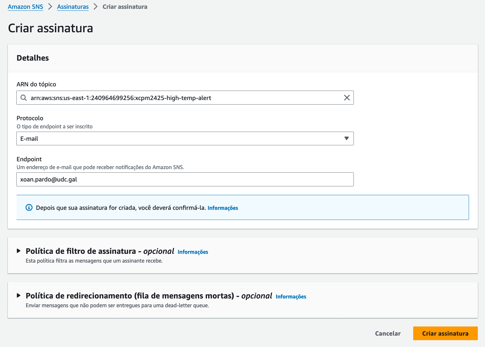
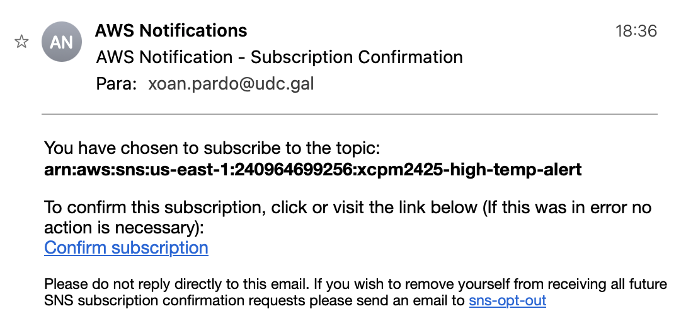
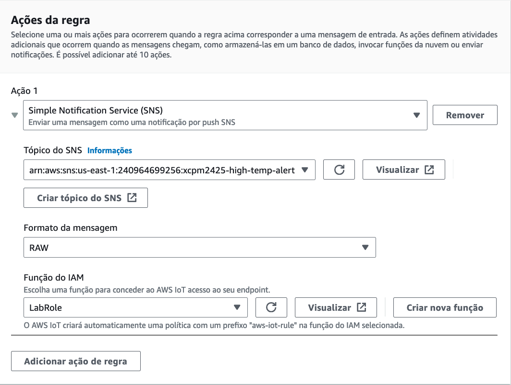
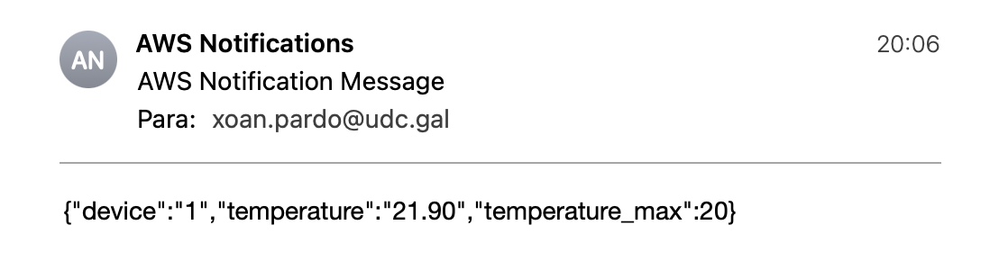

Actividade 3
CREAR UNHA REGRA PARA ENVIAR NOTIFICACIÓNS SNS.
Obxectivo
O obxectivo desta actividade é crear unha regra AWS IoT que envíe os datos das mensaxes de telemetría recibidas desde o dispositivo IoT (o camión) a un tópico do SNS para que podan ser enviados como unha mensaxe de correo electrónico.
Nota
SNS pode enviar notificacións a otros tipos de destinos, como p.ex. notificacións PUSH ou SMS a móbeis. Nesta actividade usamos o correo para evitar posíbeis cargos na factura do teléfono.
Creación do tópico SNS
Para crear un tópico do SNS fai o seguinte:
- Abre a consola de SNS e escolle a opción Tópicos no menú lateral.
-
Crea un novo tópico escollendo Crear tópico e indicando as opcións seguintes:
- Detalles: escolle o tipo Estándar.
- Nome: high-temp-alert. Lembra poñer o teu prefixo diante.
-
Crea unha subscrición SNS escollendo Crear subscrición na aba Subscricións das propiedades do tópico high_temp_alert e indicando as opcións seguintes:
- Protocolo: escolle E-mail.
- Endpoint: insire o teu enderezo de correo electrónico.
 Imaxe: configuración da subscrición SNS.
- Confirma a subscrición premendo na ligazón do correo que recibirás no enderezo que indicaches.
 Imaxe: correo de confirmación da subscrición SNS.
Nota
Unha vez confirmes a subscrición, nas propiedades da subscrición o estado aparecerá como Confirmado.
-
Para comprobar que a notificación ao tópico SNS funciona, nas propiedades do tópico high-temp-alert escolle Publicar mensaxe e publica unha mensaxe indicando as opcións seguintes:
- Asunto: Probando
- Corpo da mensaxe: insire a mensaxe que queiras enviar.
-
Comproba que recibes a mensaxe no enderezo de correo que indicaches.
Creación da regra AWS IoT
A regra vai filtrar as mensaxes nas que a temperatura non exceda un valor límite. Cando a temperatura sexa superior a ese valor, creará unha nova mensaxe cunha carga útil que só conteña o ID do dispositivo, a temperatura e o límite que foi excedido e enviaraa ao tópico SNS.
Por exemplo, se o valor límite é 20 e a carga útil dunha mensaxe contén a seguinte información:
{
"uptime": "43",
"volts": "12.08",
"temp": "21.18",
"door": "0",
"i": "1",
"n": "15",
"timestamp": 1721929699.2319772
}
A regra vaina converter ao formato seguinte, que será o enviado para o tópico SNS:
{
"device": "1",
"temperature": "21.18",
"temperature_max": "20"
}
Para criar a regra AWS IoT fai o seguinte:
- Abre a consola AWS IoT e dentro do submenú Roteamento de mensaxes escolle a opción Regras.
-
Crea unha nova regra escollendo Crear regra e indicando as opcións seguintes:
- Nome da regra: truck2sns. Lembra poñer o teu prefixo diante. Usa o caracter de subliñado para separalo do nome, xa que non se permiten guións, p.ex. xcpm2425_truck2sns.
- Descrición: pon unha descrición para a regra.
-
Instrucción SQL:
SELECT i AS device, temp AS temperature, 20 AS temperature_max FROM 'truck/freezer' WHERE temp > 20Nota
Esta instrucción selecciona os atributos i e temp das mensaxes recibidas no tópico
truck/freezerque cumpren a condición temp > 20, engade o atributo temperature_max con valor 20 e renomea i como device e temp como temperature. -
Accións da regra: na acción 1 escolhe Simple Notification Service (SNS). Nos campos que aparecen indica o seguinte:
- Tópico do SNS: escolle o ARN (Amazon Resource Name) do tópico high_temp_alert.
- Rol do IAM: escolle o rol predefinido LabRole. Este rol xa ten os permisos precisos para que a regra envíe os datos ao tópico SNS.
 Imaxe: configuración da acción.
Proba da regra AWS IoT
Nota
Podes variar o comportamento da proba editando as temperaturas no ficheiro /home/ec2-user/environment/data/trucksensordata.csv no ambiente Cloud9.
Para probar o funcionamento da regra fai o seguinte:
- Nun terminal do ambiente Cloud9 executa o script start.sh.
- No cliente MQTT da consola de AWS IoT subscríbete ao tópico
truck/freezere comproba que se reciben mensaxes desde o dispositivo IoT. - Comproba que para todas as mensaxes nas que a temperatura supera o límite recibes unha notificación no enderezo de correo que indicaches.
 Imaxe: exemplo de correo de notificación.
- Para rematar a proba preme
Ctrl+Cno terminal do ambiente Cloud9 no que estexa a executarse o script start.sh.
Xustificación da actividade
Toma as seguintes capturas para a memoria de xustificación da práctica:
- Na consola do SNS as propiedades do tópico high-temp-alert coa aba Subscricións escollida na que poida verse a subscrición ao enderezo de correo en estado confirmado.
- O correo recibido para comprobar que a notificación ao tópico high-temp-alert funciona.
- Na consola IoT as propiedades da regra truck2sns e os detalles da acción SNS.
- Un dos correos de notificación recibidos cando a temperatura supera o límite.
Importante
As capturas teñen que asemellarse ás que se tomaron no curso e na práctica 1. As capturas tomadas na consola AWS teñen que incluír o menú superior no que poida verse o nome de usuario da conta.